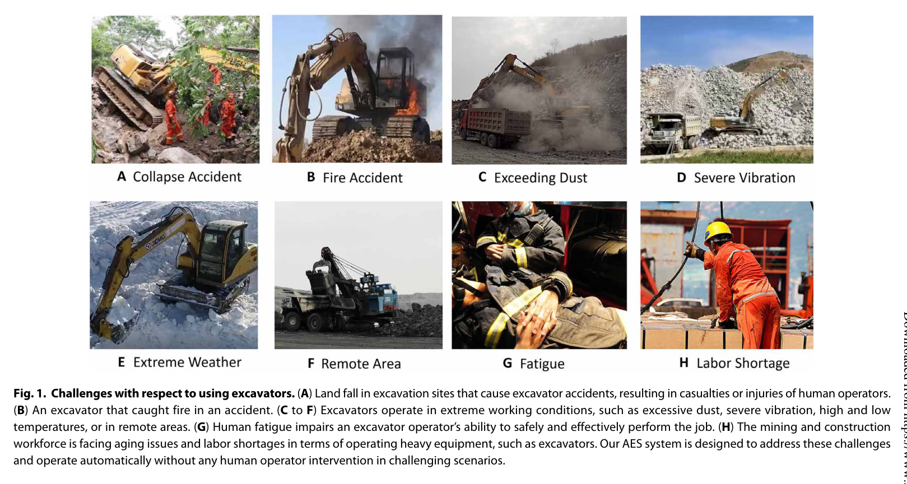
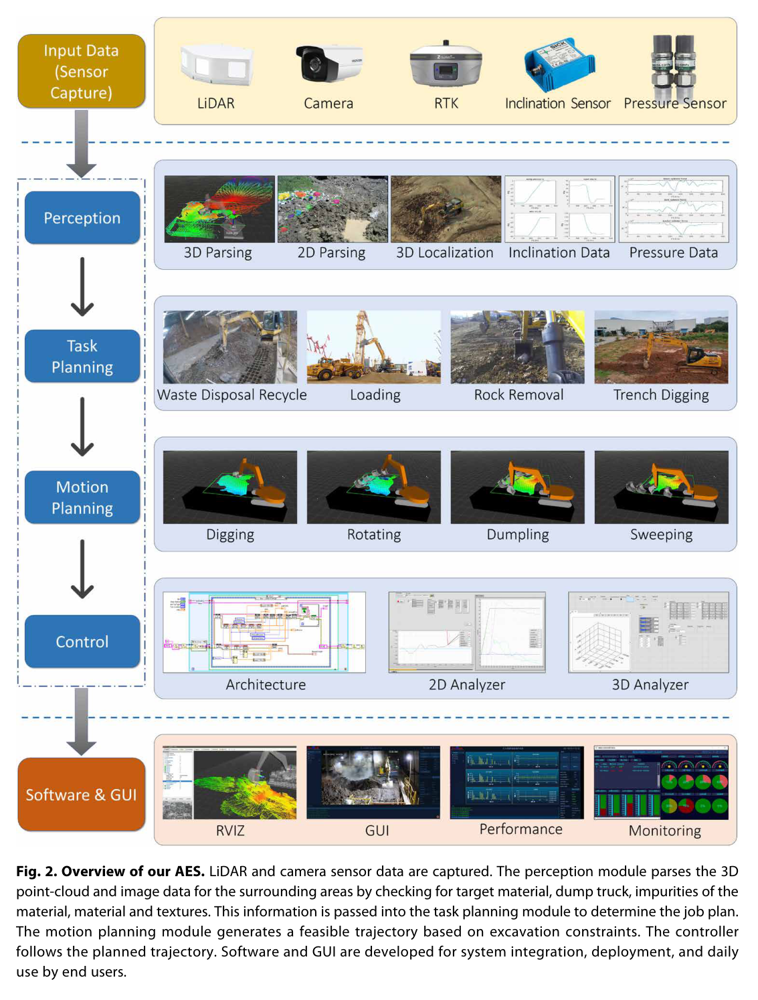
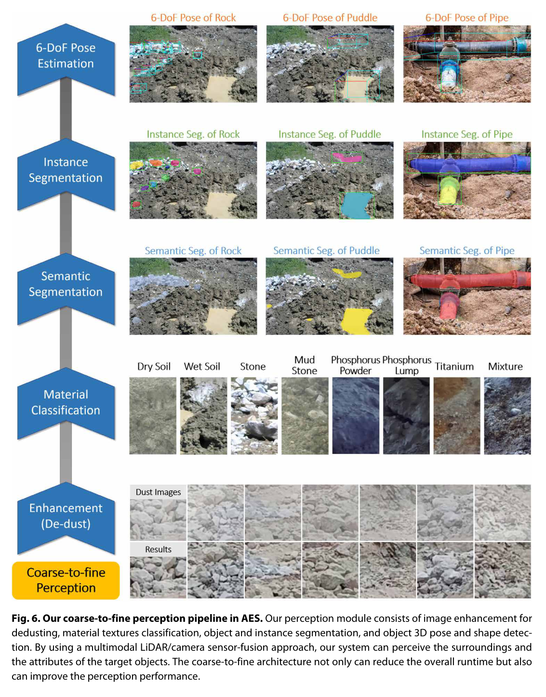
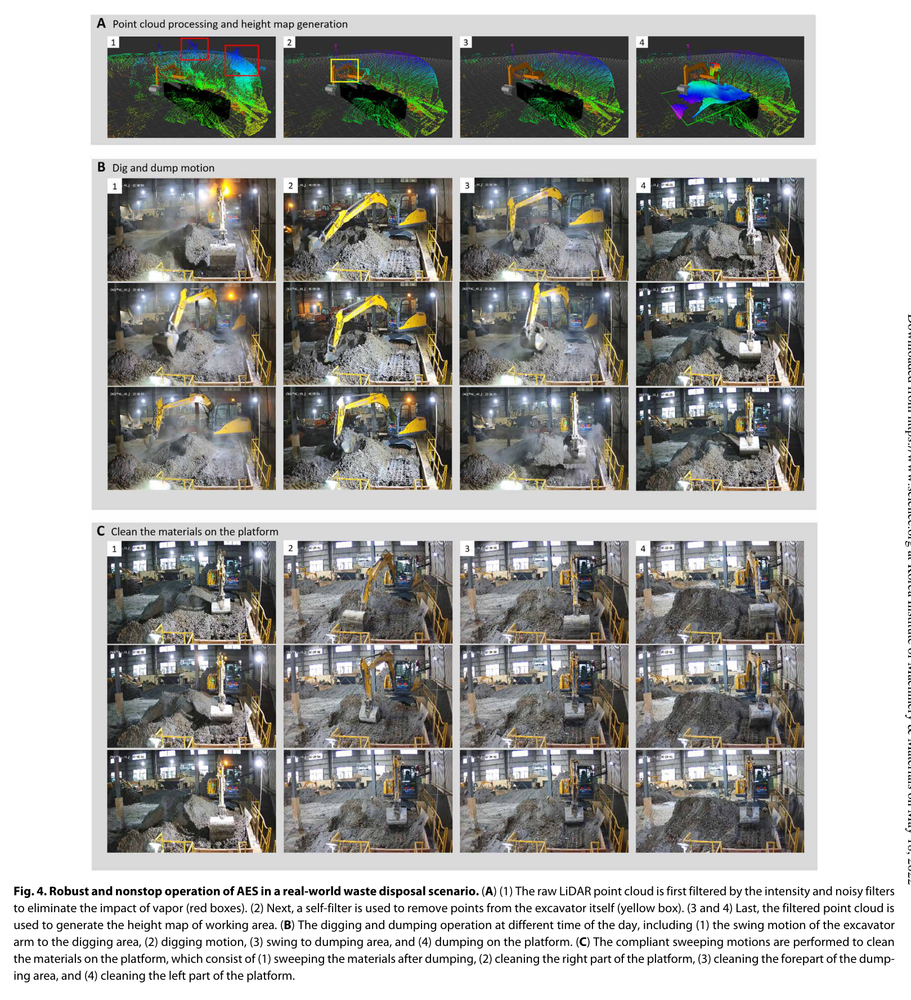
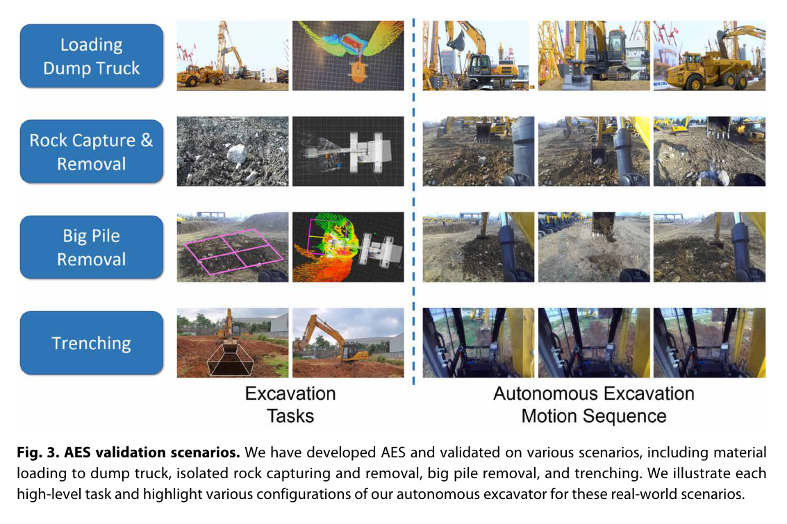
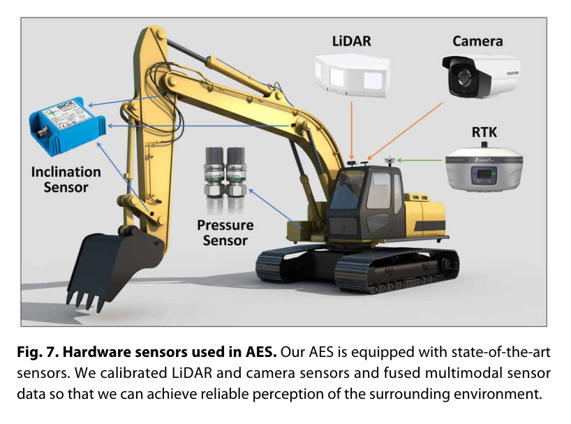
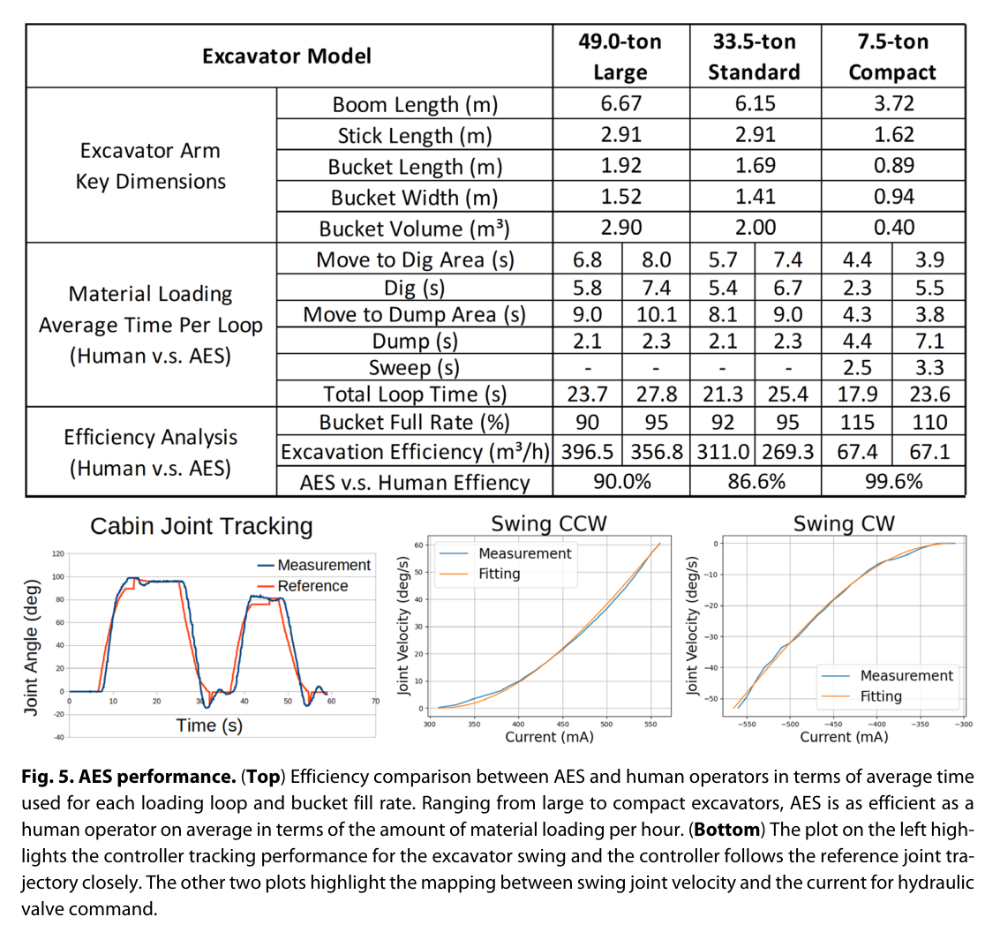
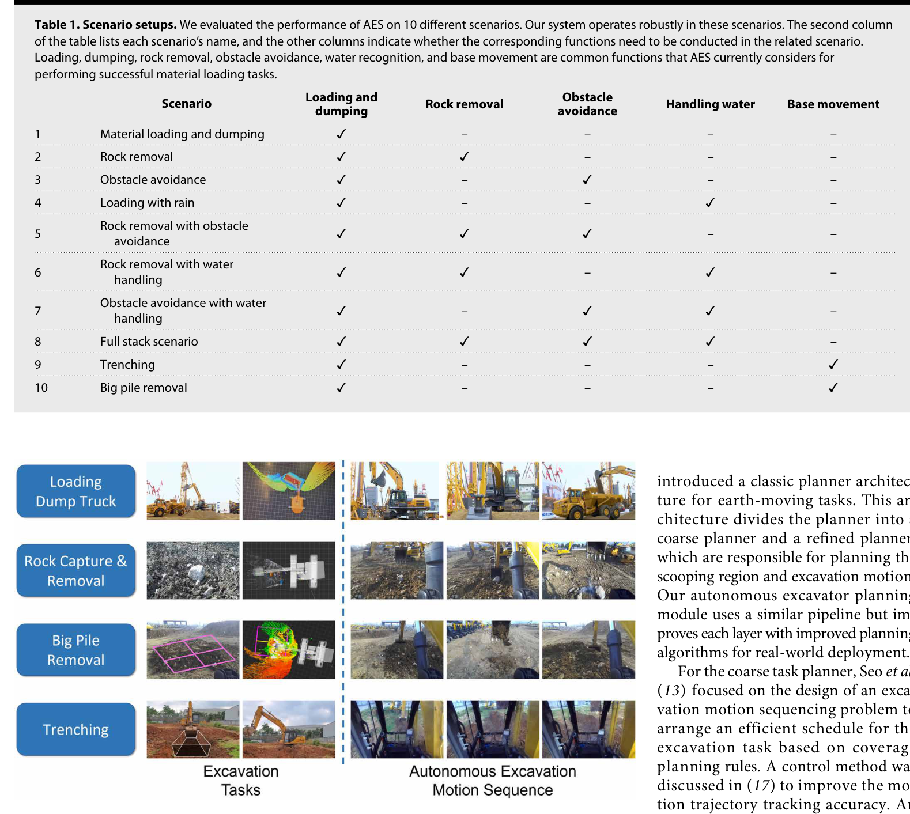

한줄 요약 — Baidu의 AES는 먼지 영상 복원, 재질·암석·트럭 인지, 시연에서 학습한 작업 비용, 확률적 궤적 최적화, 작업영역 분할, 유압 계층 제어를 통합해 여러 톤급 굴착기의 적재·암석 제거·트렌칭을 자동화한다. 표준·대형 장비의 사이클 효율은 숙련자의 85~90%였고, 7.5톤 장비는 사람 개입 없이 24시간 연속 작업했다.
1.연구 배경 및 동기
인지·작업계획·유압제어를 한 시스템으로 묶은 자율굴착
자율굴착은 버킷 궤적 하나를 생성하는 문제보다 넓다. 흙과 돌의 상태를 파악하고, 덤프트럭과 장애물 위치를 인식하고, 굴착점과 적재점을 선택하며, 작업 범위가 바뀌면 차체를 이동해야 한다. 실제 유압 굴착기는 강한 비선형성, 명령 지연, 알 수 없는 토양 저항을 가지므로 인지와 계획이 맞더라도 하위 제어가 이를 정확히 실행하지 못할 수 있다.
AES는 perception, planning, control을 하나의 실차 시스템으로 통합한다. 카메라와 LiDAR, RTK, 관절 센서가 작업장을 관측하고, 영상 복원·재질 분류·암석 및 트럭 검출이 작업 대상을 만든다. 계획 계층은 학습 기반 목표점 선택과 inverse reinforcement learning으로 얻은 비용을 사용해 작업기 궤적을 최적화하며, 큰 작업장은 여러 구역으로 나눠 차체 재배치까지 계획한다.
논문의 범위는 단일 데모를 넘어선다. 6~7.5톤 compact, 33.5톤 standard, 49톤 large 굴착기를 사용하고, 토사 적재·덤핑, 암석 제거, 장애물 회피, 우천, 물, 트렌칭, 차체 이동을 조합한 10개 시나리오를 평가한다. 효율은 사람 작업자와 비교하고, 7.5톤 장비는 밤낮과 마른·젖은 토사를 포함해 24시간 무개입 연속 작업으로 배치 수준의 지속성을 시험한다.

원문 Figure 1 · PDF p.2 — Fig. 1. Challenges with respect to using excavators. (A) Land fall in excavation sites that cause excavator accidents, resulting in casualties or injuries of human operators. (B) An excavator that caught fire in an accident. (C to F) Excavators operate in extreme working conditions, such as excessive dust, severe vibration, high and low temperatures, or in remote areas. (G) Human fatigue impairs an excavator operator’s ability to safely and effectively perform the job. (H) The mining and construction workforce is facing aging issues and labor shortages in terms of operating heavy equipment, such as excavators. Our AES system is designed to address these challenges and operate automatically without any human operator intervention in challenging scenarios.
선행 연구의 한계
기존 연구는 인지, 버킷 궤적, 유압 제어 중 일부만 다뤄 장시간 실차 임무의 전체 실패 연쇄를 평가하기 어려웠다.
정해진 흙더미와 고정 베이스를 가정한 방법은 작업 공간이 커지거나 암석·물·장애물이 섞인 현장에 대응하지 못한다.
전문가 시연을 그대로 모방하면 새로운 흙더미 형상과 장애물 배치에서 안전하고 효율적인 궤적을 생성하기 어렵다.
실험실 규모 장비의 결과는 수십 톤 유압 굴착기의 지연, 마찰, 토양 저항과 장시간 운용 신뢰성을 대표하지 못한다.
이 연구의 기여
다중 센서 인지, 계층 작업·운동 계획, 유압 제어를 통합한 end-to-end 자율 굴착 시스템을 구현했다.
먼지 제거, 8개 재질 분류, 암석 instance segmentation, 트럭 point-cloud registration을 실제 작업 인지에 결합했다.
학습 기반 굴착점 선택과 IRL 비용을 stochastic trajectory optimization에 사용하고 큰 작업장을 구역 단위로 처리했다.
6.5~49톤급 장비와 10개 복합 시나리오, 24시간 무개입 운용으로 크기·환경·작업 다양성을 검증했다.
사람 작업자의 시간당 처리량과 작업 사이클을 기준으로 자율 시스템의 실용 효율을 비교했다.
2.방법론 및 시스템 구성
AES의 인지 계층은 작업 환경의 가시성과 의미를 순차적으로 복원한다. 먼지가 낀 영상은 paired image enhancement network로 개선하고, 재질 네트워크는 토양과 광물 상태를 8개 클래스로 구분한다. Mask R-CNN은 노출된 암석을 instance 단위로 분리하며, 덤프트럭은 오프라인 3차원 template과 온라인 LiDAR 점군을 ICP로 정합해 위치와 자세를 구한다. RTK와 관절 센서는 굴착기 자체 자세 및 안전 영역 검사에 사용된다.
계획은 coarse-to-fine 계층으로 구성된다. 신경망이 버킷의 굴착 목표 위치와 길이를 제안하고, 전문가 시연에서 IRL로 학습한 비용이 종단 오차, 관절 속도·가속도, 버킷과 표면 거리 같은 trajectory feature를 평가한다. 온라인 stochastic optimization이 장애물을 피하는 작업기 궤적을 만들며, 현재 베이스에서 닿지 않는 큰 흙더미는 작업 구역으로 분할한 뒤 차체 경로를 탐색하고 각 위치에서 팔 작업을 반복한다. 유압 하위 계층은 계획 궤적을 밸브·관절 명령으로 추종하고 GUI와 안전 모듈이 운용을 감시한다.
처리 파이프라인
1
1. 센서 융합과 굴착기 상태 추정
LiDAR, RGB 카메라, Huace RTK, 붐·암·버킷 inclinometer, CAN 신호를 공통 좌표로 모은다. RTK는 차체 위치, 관절 센서는 작업기 링크 자세를 제공하며 인지·계획·안전 검사의 기준 상태가 된다.
2
2. 먼지 영상 복원
굴착 중 공중 먼지 때문에 대비와 색이 사라진 영상을 paired clean/dusty 데이터로 학습한 enhancement network가 복원한다. 256×256 영상 1,000쌍을 학습하고 200쌍을 시험에 사용한다.
3
3. 재질·암석·트럭 인지
Deep Encoding Pooling과 attention 기반 네트워크가 건조·젖은 토양과 광물 등 8개 재질을 분류한다. Mask R-CNN은 암석 instance를 검출하고, 트럭 pose는 사전 3차원 template과 실시간 점군의 ICP 정합으로 추정한다.
4
4. 학습 기반 작업 목표 선택
현재 흙더미 표현 x를 core network에 넣어 잠재 출력 y를 얻고, 행렬 M과 longitudinal·lateral·length head를 통해 굴착점의 종·횡 위치와 굴착 길이를 예측한다. 사람이 일일이 목표점을 지정하지 않아도 현재 형상에 맞는 작업 파라미터를 제안한다.
5
5. 전문가 시연에서 비용 학습
IRL은 전문가 궤적과 대안 궤적의 feature 차이를 이용해 가중치 w를 학습한다. 비용에는 목표 자세, 관절 속도와 가속도, 버킷-표면 거리 등이 포함되어 단순 위치 오차보다 사람 작업의 부드러움과 효율을 표현한다.
6
6. 온라인 작업기 궤적 최적화
학습 비용을 목적함수로 stochastic trajectory optimization을 실행하고 인지된 암석·트럭·안전영역을 제약으로 넣는다. 굴착, 적재 위치로 스윙, 덤핑, 복귀의 각 phase를 현장 상태에 맞춰 생성한다.
7
7. 대형 작업장 분할과 차체 재배치
현재 베이스에서 닿는 범위를 하나의 subtask로 보고 큰 흙더미를 여러 작업 구역으로 나눈다. 예를 들어 7×7 m 더미를 네 개의 3.5 m 정사각형으로 분할하고, 구역 사이 차체 경로를 탐색·제어한다.
8
8. 계층 유압 제어
상위 계획 궤적을 관절 참조로 변환하고 하위 controller가 유압 비선형성과 시간 지연을 보상하며 붐·암·버킷·스윙을 추종한다. 팔 작업과 차체 이동은 subtask 수준에서 분리하되 전체 순서에서 연결한다.
9
9. 안전 감시와 사람 개입 경로
미리 정의한 safety region 밖으로 링크가 나가지 않도록 RTK와 관절 센서로 검사한다. 카메라가 사람이나 동물을 감지하면 정지하고, 센서 이상이나 계획 실패 시 GUI를 통해 작업을 중단하거나 사람이 제어권을 회수한다.
전문가 feature Psi_i*가 후보 궤적보다 낮은 비용을 갖도록 로그합지수 목적과 L1 정규화를 최적화한다.

원문 Figure 2 · PDF p.3 — Fig. 2. Overview of our AES. LiDAR and camera sensor data are captured. The perception module parses the 3D point-cloud and image data for the surrounding areas by checking for target material, dump truck, impurities of the material, material and textures. This information is passed into the task planning module to determine the job plan. The motion planning module generates a feasible trajectory based on excavation constraints. The controller follows the planned trajectory. Software and GUI are developed for system integration, deployment, and daily use by end users.

원문 Figure 6 · PDF p.7 — Fig. 6. Our coarse-to-fine perception pipeline in AES. Our perception module consists of image enhancement for dedusting, material textures classification, object and instance segmentation, and object 3D pose and shape detec- tion. By using a multimodal LiDAR/camera sensor-fusion approach, our system can perceive the surroundings and the attributes of the target objects. The coarse-to-fine architecture not only can reduce the overall runtime but also can improve the perception performance.
3.핵심 기술
악조건을 단계적으로 해석하는 작업장 인지
AES는 하나의 거대 네트워크가 모든 현장 요소를 예측하도록 하지 않는다. 먼지로 훼손된 영상을 먼저 복원하고, 재질·암석·트럭을 각각 목적에 맞는 모델로 처리한다. 재질은 굴착 전략과 토양 상태 판단에, 암석 mask는 충돌 회피와 제거 작업에, 트럭 pose는 적재 궤적의 목표에 사용된다.
재질 데이터는 총 7,563장으로 6,720장 학습, 843장 시험이며 dry/wet soil, stone, mudstone, phosphorus powder/lump, titanium, mixture의 8개 클래스를 포함한다. 암석 검출은 4,000개 instance로 학습했다.
먼지 복원은 1,000쌍 학습·200쌍 시험 데이터와 NVIDIA P40에서 약 5시간 학습을 사용했다.
재질 분류기는 시험 세트에서 100% 정확도를 보고했다.
Mask R-CNN은 네 장의 GTX 1080 GPU에서 약 2시간 학습했다.
트럭 pose는 CAD에 해당하는 offline point-cloud template과 online ICP로 구한다.
학습과 최적화를 결합한 굴착 궤적
목표점 신경망은 전문가가 자주 선택한 굴착 위치를 빠르게 제안하고, IRL은 전문가 궤적에서 어떤 feature가 중요한지 학습한다. 그러나 최종 궤적은 네트워크 출력을 그대로 재생하지 않고 현재 장애물과 작업기 상태에서 다시 최적화한다. 학습의 속도와 최적화의 제약 처리 능력을 조합한 구조다.
IRL feature에는 terminal pose error, joint velocity와 acceleration, bucket-surface distance가 들어간다. 온라인 stochastic optimization은 현재 흙더미와 장애물을 반영해 굴착·스윙·덤핑·복귀 phase를 수정할 수 있다.
전문가 시연을 목적함수 가중치로 압축해 새로운 장면의 후보 궤적을 평가한다.
L1 정규화는 비용 feature 가중치의 복잡도를 제어한다.
인식된 암석과 트럭은 온라인 최적화의 공간 제약이 된다.
팔 작업과 차체 이동의 계층 작업 계획
굴착기는 한 위치에서 도달할 수 있는 범위가 제한된다. AES는 전체 흙더미를 단번에 처리하려 하지 않고 현재 베이스에서 가능한 영역을 subtask로 만든다. 해당 영역의 굴착·적재를 마치면 다음 base pose를 탐색하고 차체를 이동한 뒤 같은 팔 작업 루프를 반복한다.
이 분해는 7×7 m 같은 큰 더미를 3.5 m 단위 구역으로 처리하고 트렌칭과 base motion을 결합하게 한다. 다만 팔과 차체의 동역학을 동시에 최적화하지 않아 이동 중 작업이나 강한 결합 효과는 다루지 않는다.
base가 정지한 상태에서 각 작업기 subtask를 수행한다.
구역 사이에는 차체 경로 탐색과 MPC 기반 이동 제어를 사용한다.
작업 구역 분할은 compact 장비의 제한된 reach를 보완한다.
다중 톤급 유압 제어와 안전 계층
AES는 6.5, 7.5, 33.5, 49톤 장비에 맞춰 CAN 인터페이스와 센서 구성을 통합하고, 계층 controller로 유압 명령의 지연과 비선형성을 다룬다. 동일 소프트웨어 구조를 compact부터 large 장비까지 적용했다는 점은 알고리즘 단독 실험보다 시스템 공학적 의미가 크다.
안전은 학습 모델에만 맡기지 않는다. 미리 정한 작업 영역과 RTK·관절 센서 기반 링크 위치 검사를 사용하고, 사람·동물 검출 시 정지한다. 센서 값이 오래되거나 비정상인 경우와 계획 실패에는 사람의 fallback control을 남긴다.
차량 컴퓨터는 Intel i7과 NVIDIA GPU, 하위 제어기는 STM32F407을 사용한다.
Livox Mid-100과 RGB, RTK, inclinometer를 장비 크기에 맞춰 배치한다.
안전영역 위반과 사람·동물 인지를 별도 정지 조건으로 둔다.

원문 Figure 4 · PDF p.5 — Fig. 4. Robust and nonstop operation of AES in a real-world waste disposal scenario. (A) (1) The raw LiDAR point cloud is first filtered by the intensity and noisy filters to eliminate the impact of vapor (red boxes). (2) Next, a self-filter is used to remove points from the excavator itself (yellow box). (3 and 4) Last, the filtered point cloud is used to generate the height map of working area. (B) The digging and dumping operation at different time of the day, including (1) the swing motion of the excavator arm to the digging area, (2) digging motion, (3) swing to dumping area, and (4) dumping on the platform. (C) The compliant sweeping motions are performed to clean the materials on the platform, which consist of (1) sweeping the materials after dumping, (2) cleaning the right part of the platform, (3) cleaning the forepart of the dump- ing area, and (4) cleaning the left part of the platform.
4.실험 결과
실험 환경·장비·데이터
compact 6.5톤·7.5톤, standard 33.5톤, large 49톤 굴착기를 실내외 작업장에 배치했다.
센서는 Livox Mid-100 LiDAR·RGB, Huace RTK, SICK 또는 Honeywell inclinometer를 사용하고 CAN과 STM32F407로 장비를 제어했다.
10개 시나리오는 기본 토사 적재, 암석 제거, 장애물 회피, 우천 적재, 암석·장애물·물 조합, 전체 스택, 트렌칭과 차체 이동, 대형 흙더미와 차체 이동을 포함한다.
24시간 시험은 7.5톤 compact 굴착기로 마른·젖은 토사, 낮·밤 조건을 포함해 사람 개입 없이 연속 수행했다.
효율 비교에는 사람 전문가의 평균 작업 사이클과 시간당 재료 처리량을 사용했다.
실험 프로토콜
시나리오 1에서 자율 굴착의 dig, swing, dump, swing-back phase 시간과 전체 loop를 사람 작업자와 비교한다.
암석과 장애물이 있는 시나리오에서는 instance mask와 안전 궤적이 충돌 없이 제거·적재를 완료하는지 확인한다.
물과 우천 조건을 더해 영상 복원, 지형 인지, 계획 스택의 조합을 단계적으로 시험한다.
큰 흙더미는 여러 작업 영역으로 나누고 차체 이동과 팔 작업을 번갈아 수행해 도달 범위 밖 재료를 처리한다.
24시간 동안 개입 횟수, 누적 처리량, 시간당 부피를 기록해 장시간 안정성과 생산성을 평가한다.
비교 기준
standard와 large 장비의 평균 작업 loop 효율을 숙련 인간 작업자의 동일 작업 성능과 비교한다.
단순 적재 시나리오부터 암석·장애물·물·우천·차체 이동을 추가한 복합 시나리오로 시스템 범위를 비교한다.
재질 분류는 보유 시험 세트에서 분류 정확도를, 장시간 운용은 사람 개입 없는 연속 처리량을 기준으로 평가한다.
평가 지표
사람 작업자 대비 자율 작업 loop 효율
24시간 무개입 연속 운용 시간과 시간당 처리 부피
재질 분류 정확도와 학습 데이터 규모
10개 시나리오의 작업 완료 및 복합 기능 작동 여부
dig, swing, dump, swing-back 단계별 소요시간

원문 Figure 3 · PDF p.4 — Fig. 3. AES validation scenarios. We have developed AES and validated on various scenarios, including material loading to dump truck, isolated rock capturing and removal, big pile removal, and trenching. We illustrate each high-level task and highlight various configurations of our autonomous excavator for these real-world scenarios.

원문 Figure 7 · PDF p.8 — Fig. 7. Hardware sensors used in AES. Our AES is equipped with state-of-the-art sensors. We calibrated LiDAR and camera sensors and fused multimodal sensor data so that we can achieve reliable perception of the surrounding environment.
핵심 결과 해석
기본 재료 적재에서 standard와 large AES의 평균 작업 loop 효율은 인간 작업자의 약 85~90%였다. 자율 시스템은 굴착점 선택, 버킷 채움, 트럭으로 스윙, 덤핑, 복귀를 반복하면서 사람과 가까운 시간당 생산성을 보였다. 논문은 하나의 장비 크기나 고정 실내 장면이 아니라 33.5톤과 49톤 장비에서 이 비교를 제시한다.
복합 시험은 단순 적재에서 암석 제거, 장애물 회피, 비, 물, 차체 재배치로 난이도를 확장했다. 트렌칭에서는 작업기 subtask와 base motion을 연결했고, 7×7 m 큰 흙더미는 네 개의 3.5 m 정사각형으로 나눠 처리했다. 이는 인지 모델 하나의 정량 정확도보다 전체 시스템이 서로 다른 기능 조합을 실행할 수 있음을 보여주는 평가다.
7.5톤 compact 장비는 사람 개입 없이 24시간 연속 작동했고 평균 67.1 m³/h의 재료를 처리했다. 낮과 밤, 마른 토사와 젖은 토사를 포함한 장시간 운용 결과는 단기 데모에서 드러나지 않는 누적 오차와 시스템 재시작 문제를 통과했다는 근거다. 재질 분류기는 843장 시험 세트에서 100% 정확도를 보고했지만, 데이터 분포 밖 재질에 대한 보장은 아니다.
정량 결과
평가 항목
정량 결과
조건·맥락
원문 근거
사람 대비 작업 loop 효율
85~90%
standard와 large 굴착기의 기본 재료 적재를 숙련 작업자와 비교
PDF p.6
무개입 연속 운용
24 h
7.5톤 compact 굴착기, 낮·밤과 마른·젖은 토사 조건
PDF p.8
시간당 재료 처리량
67.1 m³/h
24시간 시험의 7.5톤 굴착기 평균 처리 부피
PDF p.8
재질 분류 정확도
100%
8개 클래스, 843장 시험 세트의 Deep Encoding Pooling·attention 모델
PDF p.9
재질 데이터셋 규모
7,563 images
6,720장 학습과 843장 시험, 8개 재질 클래스
PDF p.9
시스템 평가 시나리오
10 scenarios
적재·암석·장애물·물·비·트렌칭·차체 이동 조합
PDF p.4
실패 사례와 경계조건
극심한 먼지와 비, 바람, 눈은 카메라·LiDAR 관측을 동시에 열화시키며 눈과 얼음 조건은 시험 범위에 포함되지 않았다.
부분적으로 묻히거나 가려진 암석은 2차원 instance mask만으로 크기와 토양 내부 형상을 정확히 알기 어렵다.
학습 분포 밖 재질과 새로운 작업장에서는 인지 모델의 추가 데이터 수집과 재학습이 필요하다.
예측하기 어려운 토양 저항이 커질 때 계획 궤적과 실제 버킷 운동이 달라지고 힘 피드백은 충분히 활용되지 않았다.
inclinometer가 오래된 값이나 비정상 값을 내면 링크 자세와 안전영역 검사가 잘못될 수 있다.
팔과 차체를 분리해 계획하므로 차체 기울기와 팔 운동이 강하게 결합된 작업은 현재 구조가 정확히 반영하지 못한다.

원문 Figure 5 · PDF p.6 — Fig. 5. AES performance. (Top) Efficiency comparison between AES and human operators in terms of average time used for each loading loop and bucket fill rate. Ranging from large to compact excavators, AES is as efficient as a human operator on average in terms of the amount of material loading per hour. (Bottom) The plot on the left high- lights the controller tracking performance for the excavator swing and the controller follows the reference joint tra- jectory closely. The other two plots highlight the mapping between swing joint velocity and the current for hydraulic valve command.
5.한계 및 향후 연구
현재 한계
재질 인지는 분류 클래스 중심이며 밀도, 감쇠, 강성, 점성, 유동성처럼 굴착 힘을 결정하는 연속 물성을 직접 추정하지 않는다.
부분 매립·가림 객체와 객체 사이 의미 관계를 충분히 모델링하지 않아 버킷 경로의 숨은 충돌 위험이 남는다.
훈련 분포 밖 날씨·조명·재질에서는 인지 네트워크를 다시 학습해야 하며 눈과 얼음은 고려되지 않았다.
계획과 제어는 주로 토양 및 고립 암석에 맞춰져 복잡한 뿌리, 철근, 점착성 혼합물의 저항 변화를 다루지 못한다.
힘 피드백 활용이 제한되어 예기치 않은 굴착 저항을 상태 추정과 온라인 궤적 수정에 충분히 반영하지 않는다.
팔과 차체를 분리하고 안전영역을 사전 정의하므로 동시 동작 최적화와 일반적인 안전 보장을 제공하지 않는다.
다수 센서의 장착·보정·배선과 유압 인터페이스 구축 비용이 높고 센서 고장 진단이 장시간 신뢰성의 병목이다.
향후 연구
재질 이름을 넘어 밀도, 강성, 점성, 유동성과 버킷-토양 상호작용 힘을 온라인 추정해야 한다.
부분 매립 물체의 3차원 형상과 객체 관계를 추론하는 다중모달 장면 이해로 충돌 위험을 줄여야 한다.
극심한 먼지·우천·바람·눈·얼음에서 센서 열화를 감지하고 안전하게 성능을 낮추는 강건 인지가 필요하다.
버킷 힘·압력 피드백을 궤적 최적화와 유압 제어에 통합해 미지 토양 저항에 즉시 적응해야 한다.
차체와 작업기를 동시에 최적화해 경사지 base motion과 이동 굴착의 동역학 결합을 다뤄야 한다.
simulation, recorded-data replay, hardware-in-the-loop를 이용한 센서 고장·통신 지연·비상정지 검증을 체계화해야 한다.
사전 정의 영역을 넘어 사람·차량 행동을 예측하고 형식적으로 검증 가능한 동적 안전 계층이 필요하다.
6.한마디로 정리
핵심 방법은?
먼지·재질·암석·트럭 인지, 학습 기반 굴착점, IRL 비용과 확률적 궤적 최적화, 작업구역 분할, 계층 유압제어를 실차 스택으로 통합했다.
핵심 결과는?
6.5~49톤 장비의 10개 시나리오에서 사람 대비 85~90% loop 효율을 보이고, 7.5톤 장비로 24시간 무개입 및 67.1 m³/h를 달성했다.
한계는?
OOD 재질·극한 날씨, 부분 매립 객체, 미활용 힘 피드백, 팔-차체 분리 계획, 복잡한 센서 통합과 사전 정의 안전영역이 일반 배치의 한계다.
#시스템통합·현장실증#환경인식#작업·궤적계획#제어·MPC#멀티모달 인지#학습 기반 목표 선택#계층형 계획#유압 제어
나의 의견 / 우리 연구와의 연관성
AES는 자율굴착 연구를 개별 알고리즘 정확도에서 장시간 생산 시스템으로 확장한 사례다. 지형 지도, 객체 인지, 굴착점 선택, 팔 궤적, 차체 재배치, 유압 제어 중 하나라도 실패하면 작업이 중단되므로, 모듈 사이의 좌표·상태·안전 인터페이스와 사람 fallback이 모델 성능만큼 중요하다는 점을 보여준다.
필드로봇 관점에서 24시간 시험과 여러 톤급 검증은 처리량과 신뢰성을 동시에 보는 기준을 제시한다. 다만 실제 광산·건설현장에 배치하려면 TNS 같은 주행성 지도, 힘 기반 토양 추정, 동적 사람·장비 예측, 센서 고장 대응을 더 강하게 결합해야 한다.
굴착점 학습과 궤적 최적화를 분리해 데이터 기반 선호와 현장 제약을 함께 처리한다.
큰 작업장을 subtask로 나누는 방식은 제한된 작업기 reach와 차체 이동을 연결한다.
시간당 처리량과 사람 대비 효율은 실험실 오차보다 산업 현장에 가까운 성능 지표다.
24시간 무개입 시험은 인지·계획·제어뿐 아니라 시스템 복구와 센서 신뢰성의 중요성을 드러낸다.
여러 톤급 적용은 공통 아키텍처와 장비별 보정 파라미터를 분리해야 함을 보여준다.
향후에는 주행·굴착·차체 재배치와 사람 안전을 하나의 폐루프 작업 계획으로 통합해야 한다.
7.전체 그림·표
본문 핵심 위치에 배치하지 않은 원문 Figure와 Table을 원문 페이지 순서로 수록한다.

원문 Table 1 · PDF p.4 — Table 1. Scenario setups. We evaluated the performance of AES on 10 different scenarios. Our system operates robustly in these scenarios. The second column of the table lists each scenario’s name, and the other columns indicate whether the corresponding functions need to be conducted in the related scenario. Loading, dumping, rock removal, obstacle avoidance, water recognition, and base movement are common functions that AES currently considers for performing successful material loading tasks.